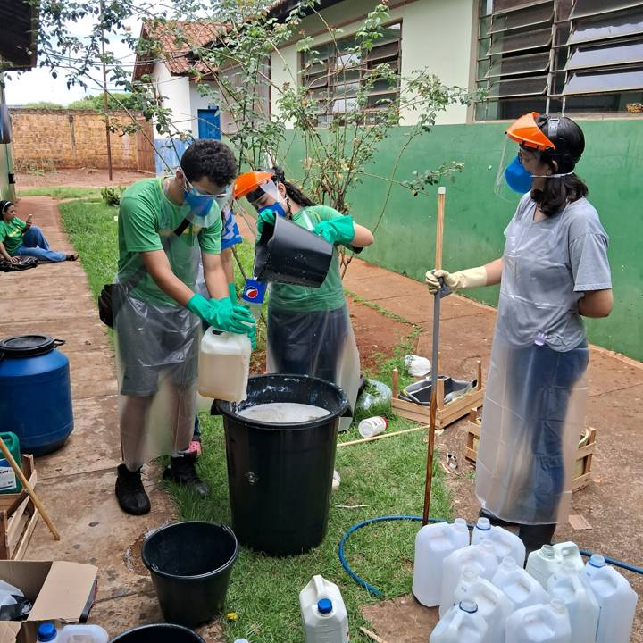

Reaproveitamento
Óleo de cozinha vira sabão
Os alunos trazem de casa o óleo usado, que seria descartado no ralo ou no solo. Na escola, com todos os equipamentos de proteção, ele vira sabão para limpar a escola e sabonete líquido para os banheiros.
Parte do sabão é vendida, e o dinheiro volta para os alunos em mesa de ping-pong, pebolim, bolas e jogos.